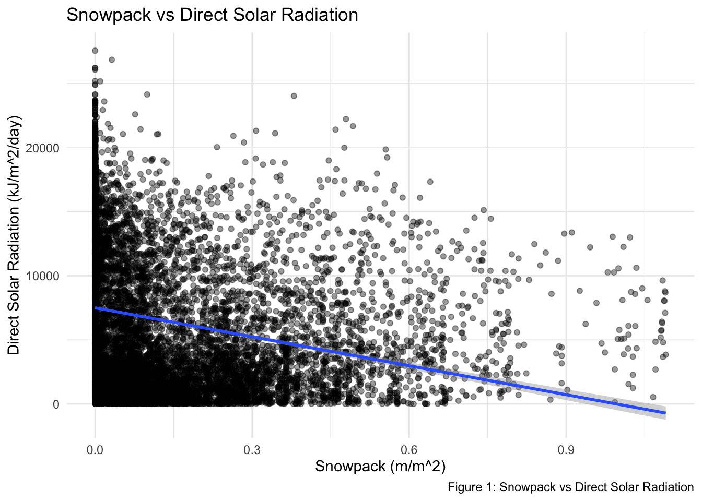
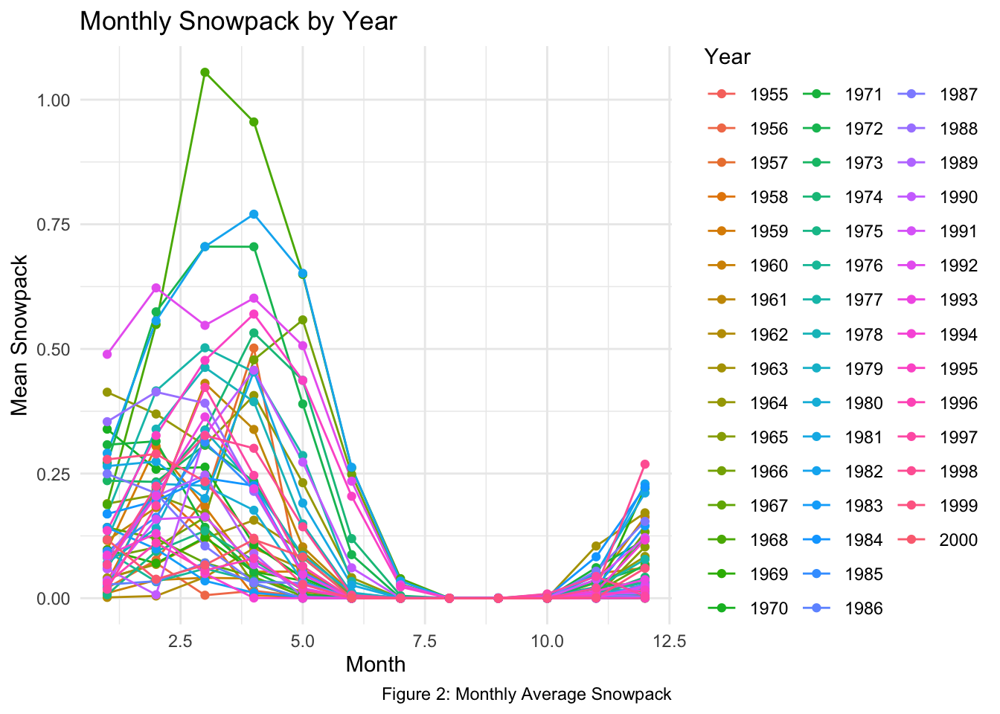
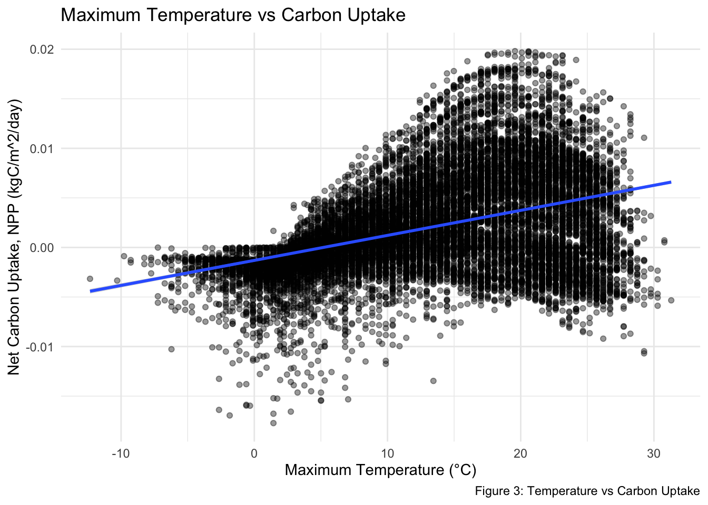
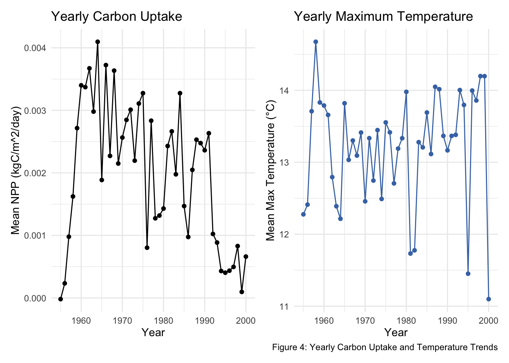

For this assignment, we analyzed climate and forest data from a U.S. Forest Service watershed. We focused on two main questions. First, we looked at the relationship between snowpack and solar radiation. Second, we examined how maximum temperature relates to carbon uptake by trees. These analyses help to understand how climate drivers like energy availability and temperature influence forest productivity and seasonal dynamics.
Analysis 1: Snowpack and Solar Radiation
In this analysis, we examined the relationship between snowpack and direct solar radiation. We wanted to see how snow levels change alongside solar energy and if there is a clear pattern between them.
library(here)
here() starts at /Users/rodriguez/Desktop/ESM 262 Computing
── Conflicts ────────────────────────────────────────── tidyverse_conflicts() ──
✖ dplyr::filter() masks stats::filter()
✖ dplyr::lag() masks stats::lag()
ℹ Use the conflicted package (<http://conflicted.r-lib.org/>) to force all conflicts to become errors
library(janitor)
Attaching package: 'janitor'
The following objects are masked from 'package:stats':
chisq.test, fisher.test
library(patchwork)# read datasc_sierra_data <-read.csv(here("Assignments", "Data", "p301.csv"))|>clean_names()|>drop_na()# Analysis 1: Snowpack and direct solar# monthly averages by year and monthsnow_solar_monthly <- sc_sierra_data |>group_by(year, month) |>summarise(mean_snowpack =mean(snowpack, na.rm =TRUE),mean_direct_solar =mean(direct_solar, na.rm =TRUE), .groups ="drop")# simple linear regressionlm_snow_solar <-lm(direct_solar ~ snowpack, data = sc_sierra_data)summary(lm_snow_solar)
Call:
lm(formula = direct_solar ~ snowpack, data = sc_sierra_data)
Residuals:
Min 1Q Median 3Q Max
-7484 -4854 -1051 4410 20051
Coefficients:
Estimate Std. Error t value Pr(>|t|)
(Intercept) 7496.09 49.03 152.87 <2e-16 ***
snowpack -7532.92 262.33 -28.72 <2e-16 ***
---
Signif. codes: 0 '***' 0.001 '**' 0.01 '*' 0.05 '.' 0.1 ' ' 1
Residual standard error: 5421 on 16343 degrees of freedom
Multiple R-squared: 0.04803, Adjusted R-squared: 0.04797
F-statistic: 824.6 on 1 and 16343 DF, p-value: < 2.2e-16
# graph 1: scatterplot with regression line#| fig-cap: "Figure 1: Snowpack vs Direct Solar Radiation"scatter_regress <-ggplot(sc_sierra_data, aes(x = snowpack, y = direct_solar)) +geom_point(alpha =0.4) +geom_smooth(method ="lm", se =TRUE) +labs( title ="Snowpack vs Direct Solar Radiation",caption ="Figure 1: Snowpack vs Direct Solar Radiation",x ="Snowpack (m/m^2)",y ="Direct Solar Radiation (kJ/m^2/day)") +theme_minimal()scatter_regress
`geom_smooth()` using formula = 'y ~ x'

# graph 2: monthly averages over timeavg_time <-ggplot(snow_solar_monthly, aes(x = month, y = mean_snowpack, group = year, color =factor(year))) +geom_line() +geom_point() +labs( title ="Monthly Snowpack by Year",caption ="Figure 2: Monthly Average Snowpack",x ="Month",y ="Mean Snowpack",color ="Year") +theme_minimal()avg_time

Approach
We first grouped the data by year and month to organize it over time. Then we calculated the average snowpack and average direct solar radiation for each month. This helped simplify the data and made it easier to see patterns over time. Next, we ran a simple linear regression to test the relationship between snowpack and direct solar radiation. This allowed us to see whether changes in snowpack correlate with changes in solar radiation.
Findings
Our findings in this analysis show a negative relationship between snowpack and direct solar radiation. As snowpack increases, direct solar radiation decreases. This makes sense given that there is more snow in the winter when solar radiation is lower. The relationship is also statistically significant, because the p-value is very small (p < 0.001), meaning the relationship is unlikely to be due to random chance. However, the R-squared value is low (0.05), which suggests that there may be other environmental factors, such as seasonality or atmospheric conditions, that also influence solar radiation. Figure 1 shows a small negative relationship between snowpack and direct solar radiation, where higher snowpack is associated with lower solar radiation. The points are pretty spread out, showing the relationship is not that strong. Figure 2 shows how snowpacks change over time. It shows clear seasonal patterns where snowpack is higher in some months and lower in others.
Analysis 2: Temperature and Carbon Uptake
In this analysis, we examined the relationship between maximum temperature and carbon uptake by trees. We wanted to see if higher temperatures are associated with increases or decreases in carbon uptake.
# Analysis 2: Carbon uptake and max temperature# yearly averagesnpp_tmax_yearly <- sc_sierra_data |>group_by(year) |>summarise(mean_npp =mean(npp, na.rm =TRUE),mean_tmax =mean(tmax, na.rm =TRUE),.groups ="drop")# simple linear regressionlm_npp_tmax <-lm(npp ~ tmax, data = sc_sierra_data)summary(lm_npp_tmax)
Call:
lm(formula = npp ~ tmax, data = sc_sierra_data)
Residuals:
Min 1Q Median 3Q Max
-0.0167794 -0.0024104 -0.0002056 0.0023773 0.0164044
Coefficients:
Estimate Std. Error t value Pr(>|t|)
(Intercept) -1.308e-03 6.821e-05 -19.18 <2e-16 ***
tmax 2.525e-04 4.401e-06 57.37 <2e-16 ***
---
Signif. codes: 0 '***' 0.001 '**' 0.01 '*' 0.05 '.' 0.1 ' ' 1
Residual standard error: 0.004522 on 16343 degrees of freedom
Multiple R-squared: 0.1676, Adjusted R-squared: 0.1676
F-statistic: 3291 on 1 and 16343 DF, p-value: < 2.2e-16
# graph 3: scatterplot with regression line#| fig-cap: "Figure 3: Temperature vs Carbon Uptake"temp_vs_carbon <-ggplot(sc_sierra_data, aes(x = tmax, y = npp)) +geom_point(alpha =0.4) +geom_smooth(method ="lm", se =TRUE) +labs(title ="Maximum Temperature vs Carbon Uptake",caption ="Figure 3: Temperature vs Carbon Uptake",x ="Maximum Temperature (°C)",y ="Net Carbon Uptake, NPP (kgC/m^2/day)") +theme_minimal()temp_vs_carbon
`geom_smooth()` using formula = 'y ~ x'

# graph 4.a temperature by yeartemp_by_year <-ggplot(npp_tmax_yearly, aes(x = year, y = mean_tmax)) +geom_line(color ="#4575b4") +geom_point(color ="#4575b4") +labs(title ="Yearly Maximum Temperature",caption ="Figure 4: Yearly Carbon Uptake and Temperature Trends",x ="Year",y ="Mean Max Temperature (°C)") +theme_minimal()# graph 4: yearly averagescarbon_by_year <-ggplot(npp_tmax_yearly, aes(x = year, y = mean_npp))+geom_line() +geom_point() +labs(title ="Yearly Carbon Uptake",x ="Year",y ="Mean NPP (kgC/m^2/day)") +theme_minimal()carbon_by_year + temp_by_year

Approach
First, we grouped the data by year and calculated the average carbon uptake (NPP) and maximum temperature. We also calculated yearly averages to highlight long-term trends and reduce short-term variability in temperature and carbon uptake. Next, we ran a simple linear regression to test the relationship between maximum temperature and carbon uptake. This allowed us to see whether changes in temperature are associated with changes in carbon uptake.
Findings
Our findings for this analysis show a positive relationship between maximum temperature and carbon uptake. As temperature increases, NPP also increases. The relationship is statistically significant with a small p-value (<2e-16), but temperature only explains part of the variation in carbon uptake given the R-squared value (0.1676). Overall, this shows that warmer conditions are linked to higher carbon uptake, likely reflecting increased photosynthesis under warmer conditions, as higher temperatures can enhance plant growth up to a certain threshold. However, just like with snow and solar radiation, other factors can also influence it.
Figure 3 shows a positive relationship between maximum temperature and carbon uptake, where higher temperatures are generally associated with higher NPP. The points are more closely grouped than in Figure 1, showing a stronger relationship. Figure 4 shows yearly trends in both carbon uptake and maximum temperature. When viewed side-by-side, the plots suggest a general similarity in patterns over time, indicating a potential relationship between temperature and carbon uptake. It is also interesting to note that it appears that snowpacks have been on a steady decline since the 1960s, and so has carbon uptake by trees. Overall, these analyses suggest that climate variables such as temperature and snowpack influence forest processes, but the relationships are complex, influencing seasonal patterns and additional environmental factors.